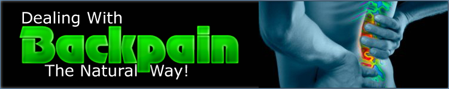
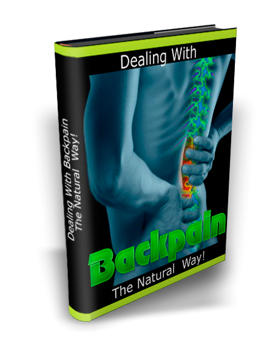

|  | ||
"Deal With Your Pain, Lead A Wonderful Life An Live Like A 'Normal' Person - Guaranteed Or Your Money Back!"Before I really start telling you anything about me or finding out anything about you, I want you to know that I sympathize with you. Not only is it one of the most painful experiences to have backpain. Not only is it the number one excuse for employees not coming into work. But perhaps just as significantly, it is something that I suffered from for years. But now I can happily (read joyously) tell you that I am pain-free and live my life the same as men 20 years younger than me do. But it was not always that way...You probably find that your family and friends have a different point of view about pain and back pain in particular because it is not something that they have lived through. Had they lived through it, then they would not say half of the things that they have undoubtedly said to you many times before: "Didn't your back hurt you last week also?" "Can't you just take a tablet? "Are you faking? Yes, I know that they hurt when they are said to you, but they also show the total misunderstanding of someone who has never before suffered from back-pain. The one that really does it for me, is the "Are you faking?" comment. the problem is, that apart from your cries of pain there is no real proof that you really do suffer from back pain. I had an employer once who was out to get me because he thought that I was "affecting the whole team" by the number of sick days that I had to take. And the ironic thing, is that I WISHED that I had not had to take those sick days. At the time, I would have given almost anything in order to have had the health to be able to attend work. But let's step back a bit...You may be wondering how I managed to start suffering from such a bad back. It's a bit strange because I don't really have a great answer. There was no dramatic accident, or something extremely heavy which I did to start off the pain. In fact it started when I was doing something ever so ordinary. I had arrived back from the shops with my food shopping and was taking the bags out of the car into the house when suddenly I felt something 'tug' in my back. Suddenly I was in the most excruciating pain. Not only that, but sweat started to pour down my face and I started to feel really quite faint. My wife came running out of the house when she heard my cries with a worried look on her face. She told me afterwards that she had thought that there had been in a terrible accident and was in a lot of pain. Well, she was wrong about the accident, but oh boy, the pain was like nothing that I have ever felt before. And rather than subsiding and improving like pain usually does, it only became worse. I spent a few days in bed suffering before realizing that I had to go and see a doctor in case I had done some real harm that needed medical attention. After dragging myself to see my Doctor, he said that I had BACK PAIN :) Wonderful diagnosis (feel the sarcasm...). I felt like telling him that that was the exact reason I was there and that I hadn't needed to go through an agonizing car ride in order for him to tell me that! What I really needed to know from him though was how to combat the paid. His answer was that I should give my back plenty of rest - like I hadn't been doing that for the last few days! Much more painful time passed...Over the next year, I had a very painful year. Sometimes I was in more pain and sometimes in less, but on the whole it was a year that makes me grimace when I think about it. I also saw several specialists and countless thousands of dollars which didn't seem to help me at all. The only solutions that they had were either some very invasive operations which I was told could actually lead to paralysis or drugs that would knock me out so that I would hardly know what was going on. I confess that during some or the excruciating pain days, I did take some of the drugs but they didn't help me so much as to knock me out so that I couldn't do anything else but sleep. If you have been in a similar situation to me, then you will know that you become desperate and it almost becomes a quest to see if you can find the holy grail of pain relief. My trust in conventional medicine during that year hit an all time low as I realized again and again that as much as they may have wanted to help me, this was not possible. Perhaps something alternative?I am not a 'new age' kind of guy and the thought of going to alternative medicine is something that I never would have considered before, but in a state of desperatism you are almost ready to do anything. So, I went through a whole list of different so called experts who promised that they would be able to help me. They used needles, hypnotism, fire, smells and almost anything else that you can think of in order to try and help me, but almost $10,000 later the pain had hardly become any less. My wife is the one who I like to credit with the start of what became my turn-around period. She was scanning the newspaper one day when she came across an advert in the self-help section about a group of people who got together in order to support each other's pain. Well, I didn't have anything to lose, so the next Wednesday evening, I went to meet with this group. Similarities with alcoholics anonymous?It does seem funny looking back, but it was very similar to Alcoholics Anonymous like you see in the films where people sit around and give their stories and then clap each other and cheer. There was even a 12 Step program in order to try and encourage you to reach a higher stage. I went a few times, and to be honest with you would come back and laugh with my wife about some of the people there. It sounds mean now, but there must have been some of the strangest people in the world sitting in the room with me. What I did discover though was that a number of people in the room were dealing with their pain in ways I never though possible without drugs or surgery of any sort. Although I didn't take it too seriously, after one of the meetings where a young lady called Helen spoke, I actually tried out something that she said. It involved drinking water at certain times of the day. the amazing thing was that although it didn't get rid of my completely, I did feel slightly relieved as there were times during the day when I was not in agony. After a few more weeks of attending, I started to realize that if I actually listened to the people who were giving the talks then I would learn certain techniques on how to relieve my pain and more specifically my back pain. It was a journey of trial and error, but eventually I found that week by week my pain was reducing and that slowly slowly my life was returning back to normal. For the last few months, I have seldom even thought about my back as unless I do something particularly strenuous I feel no pain at all. My wife is amazed and I am too and if you are going through anything like I was then you will be too as you read about the different strategies which I have used in order to get rid of my back pain. If you are suffering, then this will surely be the one report which you MUST read if you want any chance of living a normal life. Introducing:
The cure for backache without drugsDiscover:
I invite you to download my eBook right now.
Given that downloading Dealing with Backpain the Natural Way is of no risk to you and that you have nothing to lose and everything to gain then there is absolutely no reason that you should not take advantage of it right now! What are you waiting for? For your doctor to tell you to rest more? For your employer to not believe the pain that you are going through? To continue refraining from the things that you really want to do?
For traditional medicine to come up with a cure? DON’T HOLD YOUR BREATH ON THAT ONE!
|
||